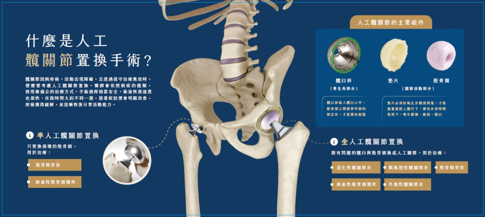

人工髖關節置換術手術前後照護

【本篇學習重點】
1. 人工髖關節置換術手術後隔天由護理人員協助指導下床。
2. 術後需維持髖關節正確姿勢，避免翹二郎腿、彎身穿襪子、撿物或坐太低椅子。
3. 如手術部位紅腫、滲液、發燒、人工關節異常聲響、或疼痛無法活動，請回診檢查。
一、什麼是人工髖關節置換術？
經由手術將病變的髖關節部份或全部切除，以人工關節取代原有髖關節。
二、為什麼需要此手術？
1. 減輕疼痛，恢復或改善關節活動功能。
2. 改善生活品質。
三、手術前準備：
1. 手術前完成各項檢查：如胸部X光、心電圖及抽血檢查等。
2. 經醫師解釋手術目的、過程、風險後需填寫手術、麻醉、輸血同意書。
3. 手術前一晚依醫師指示告知您禁食時間，禁食期間不可以吃任何食物、不可喝開水及飲料。
4. 手術前需去除指甲油且勿化妝，以利手術中觀察血液循環。
5. 手術當天更換手術衣褲，入手術室前請將活動假牙及身上飾物取下，包括項鍊、手鐲、戒
指、髮夾、手錶、眼鏡、隱形眼鏡及假牙…等。
四、手術後照護原則：
1. 術後無噁心嘔吐情形可進食，飲食無禁忌。
2. 翻身移位時注意避免牽扯傷口引流管。
3. 手術後如有疼痛，請告知護理師處理。
4. 需維持手術髖關節正確姿勢。
A. 髖關節應保持外展：平躺及翻身時兩腿間放置枕頭，避免兩腳交叉、翹二郎腿。
B. 髖關節彎曲避免超過90度：髖關節彎曲避免超過90度之目的是使身體與患肢間的角度勿小於90度，以預防人工髖關節滑脫(圖四)，故日常活動中應避免身體往前傾、彎身穿襪子、撿物或坐太低椅子等。
5. 在醫護人員指導下，執行足踝、股四頭肌收縮及直抬腿運動。
6. 術後隔天由護理人員指導下床活動，並教導使用柺杖或助行器下床行走(延伸閱讀：枴杖與助行器使用法)，行走時需依照醫師指示手術的肢體可否負重(若可以完全負重即表示行走時，開刀的腳可以承受身體重量，可正常踩地)。
五、居家照顧注意事項：
1. 傷口應保持清潔乾燥傷口不可碰水，術兩週返診經醫師評估予拆線後才可沐浴，以淋浴為宜。
2. 請繼續執行住院期間所教導的復健運動。
3. 使用助行器或柺杖走路，應注意安全預防跌倒。
4. 三個月內髖關節均須保持外展及避免彎曲超過90度，以防人工髖關節脫位。
5. 如手術部位有紅腫、滲液、發燒、人工關節異常聲響、或跌倒使髖部疼痛無法活動，應至骨科門診就診。